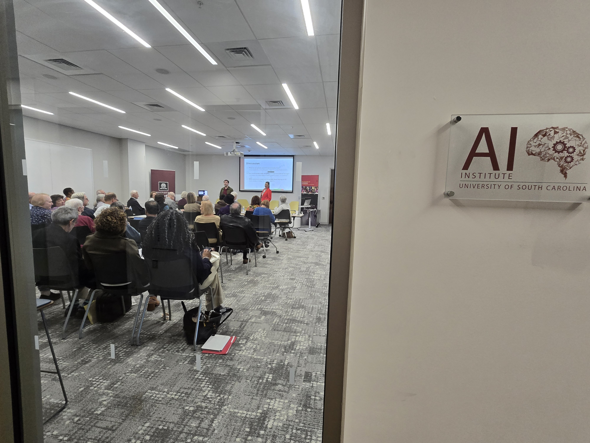
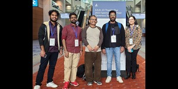
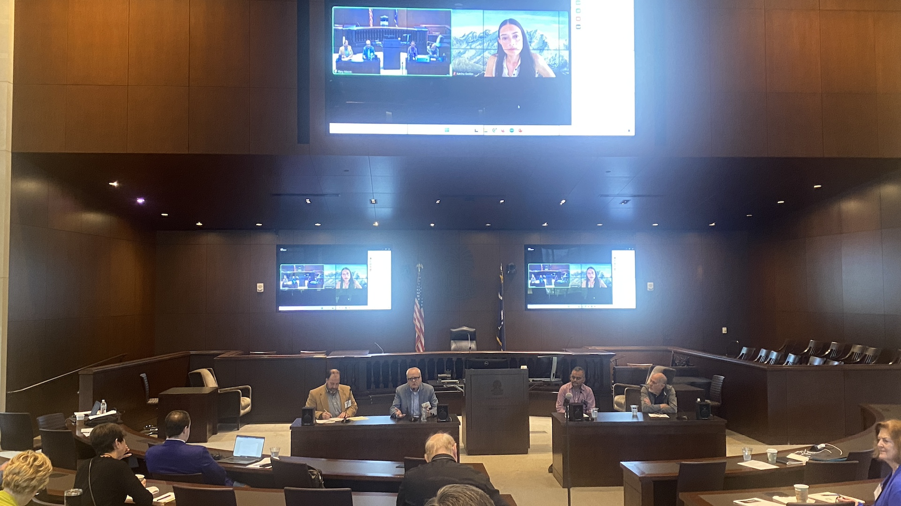
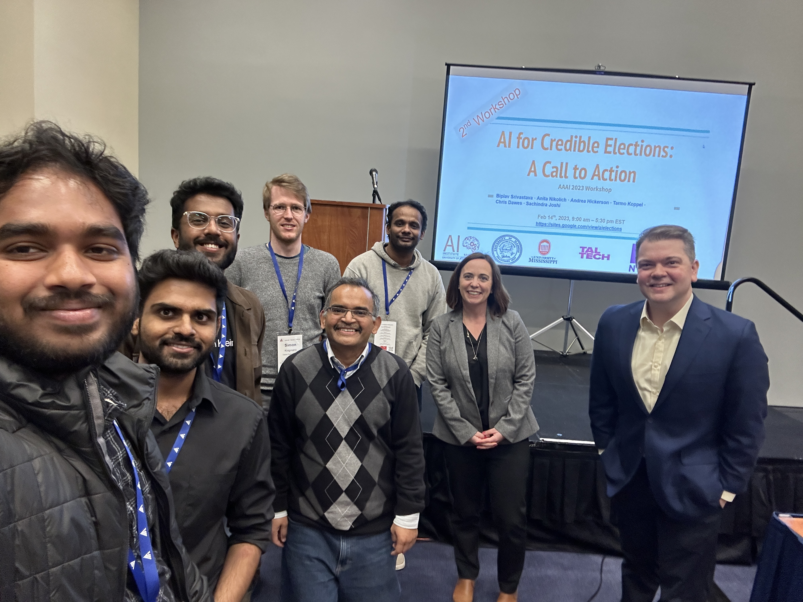
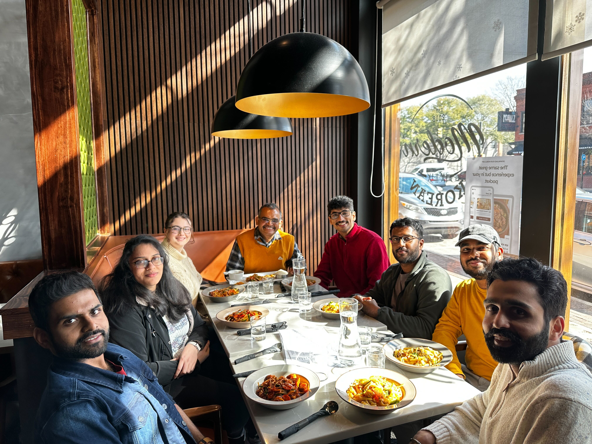
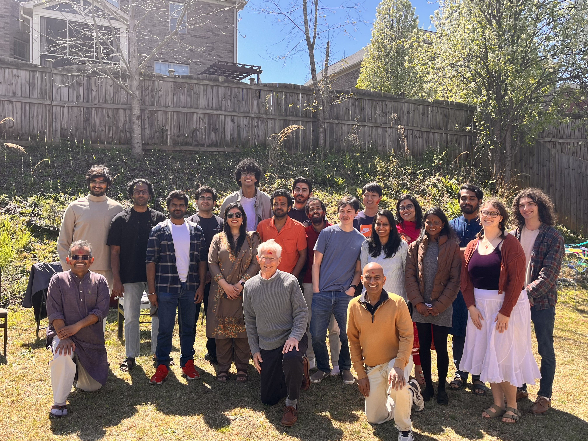

|
Home | Activities | Awards | Demos | Funding | Members | NewsLog | Patents | Projects | Publications |
|
|
Historically, AI has done well only when not near humans. AI for Society (AI4S) group at the AI Institute is focused on enabling people to make rational decisions despite real-world complexities of poor data, changing goals, and limited resources by augmenting their cognitive limitations with technology. Lead by Prof. Biplav Srivastava, the group works in neuro-symbolic methods, trusted AI, and applications of data-driven methods to society. We innovate as well as apply AI techniques for hard problems facing the society with an inclusive, value-driven, focus. Our differentiating initiatives are in working with, including training, large language models and creating ontology for automated planning (generalized planning), black-box assessment and rating for AI (GAICO and ARC tools), group recommendation, metacognition-based SOFAI tool to combine fast (e.g., LLMs) and slow thinking (e.g., reasoners), and exploring AI like chatbots in trust-sensitive domains, viz. elections, opinion networks, and traffic (for SC).
2025
December
Vishal Pallagani will defend his dissertation proposal on Dec 03 – "Generalized Planning Using Language Models and its Applications". November
A day-long, free, hybrid event, AIx: Safe AI for Seniors, was held on November 14 (Friday). Sponsored by AAAI and local organizations, this community outreach initiative focused on the role of AI in keeping senior citizens safe and independent. Three demo papers accepted at AAAI 2026 on GAICO, Omega and Chatsparent. Biplav gave a keynote talk, Extending Transparency Beyond Developers in AI-Driven Decision Making, in 'AI Trustworthiness and Risk Assessment for Challenged Contexts (ATRACC)', and served on a panel discussion on AI safety in 'Engineering Safety-Critical AI Systems at AAAI 2025 Fall Symposium, on Nov 7, 2025. October
A paper on GAICo: A Deployed and Extensible Framework for Evaluating Diverse and Multimodal Generative AI Outputs is accepted at IAAI/AAAI 2026. Preprint at arXiv. |

AIx - Nov '25

AIx - Nov '25
Recent Graduates - May '25

AI4Society @ AAAI 2023

ElectionBot-SC Demo @TechInLaw '24

AI for Credible Elections Workshop @AAAI '23

Team Lunch - Spring '25

Holi Celebration @ 2024

All AIISC faculty families @ 2022

All AIISC faculty families @ 2022
Spotlight
Highlights from AI4Society
Activity Spotlight
AI4Society is organizing ICAPS 2027at Columbia, South Carolina.
Research Spotlight
|
|
|
|